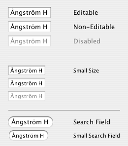

Property |
Type | Notes |
|---|---|---|
|
java.lang.String |
Values: "regular", "small", "mini" |
Quaqua.TextComponent.showPopup |
Boolean |
Set this to |
Quaqua.TextComponent.autoSelect |
Boolean |
Set this to |
Quaqua.TextField.style |
String |
Set this to "search" to get rounded borders like the Spotlight search field. Set this to "plain" to get a rectangular border like for regular text fields. The default value is "plain". |
Quaqua.Component.visualMargin |
java.awt.Insets |
See layout |
| Property | Type | Notes |
|---|---|---|
Quaqua |
true |
Quaqua shows a non-blinking caret in non-editable text components, like OS X does. Set this property to false to turn this behavior off |

In order to properly display JTabbedPane's with Panther design, Quaqua sets all text components to non-opaque.
Since Quaqua text fields always draw the background of their content area, they appear to always be opaque. Changing the opaque property of a text field only affects its border.
|
If you want to achieve a text component with a see through content area, you have to set it's background color to a color with a translucent alpha channel value, or you have to replace its border.
Here's how to make the content area completely translucent, without changing its border:
|
Here's how to get a rounded border for a seach field:
|